List of Farms of Better Life Server
Minecraft Server address: Forestrestaurant.aternos.me
If you haven't joined our minecraft server, address is above. Open the app => go to multiplayer=> join new server => add the address 'Forestrestaurant.aternos.me' => welcome! And if u haven't joined our Discord server then here is the link: https://discord.gg/better-life-1010629328196874291
So lets start with our Minecraft farms list.
1. Iron Farm
This was our one of the first farm and still we doesn't need to upgrade because it provide enough iron for server people. But we can upgrade it later as needed. Along with iron it produce poppy flower which has some uses too, like you can breed bees or put them in composter to make a bonemeal.
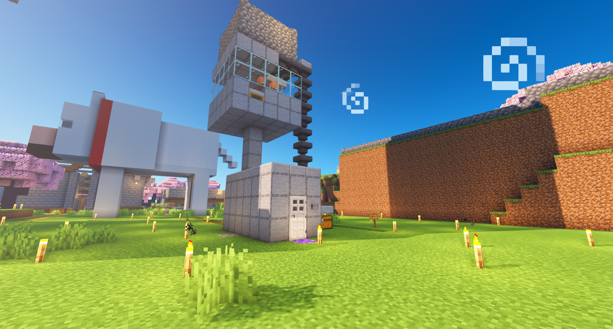2. Beef Farm
This farm may look small but it is strong enough to feed us enough beef farm. Their are 2 beef farm side by side. They also give us leather, which we use furthur for making book or trading with leather worker. We just need wheat(dried wheat) and feed them.

3. Cooked Chicken Farm
This farm give us cooked chicken and feather, feather can be used to make book and quill and trade it.
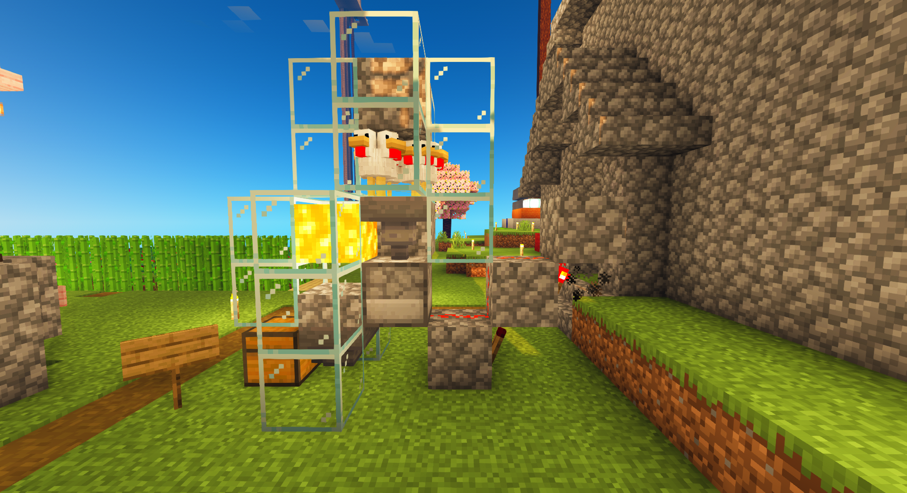4. Sugarcane Farm
A simple yet enough paper to trade and make rockets. Well we will have to upgrade it, but most of us don't have elytra now, so we are not upgrading. If we will upgrade then we will make flying machine and rail sugarcane farm, ig u got that farm !
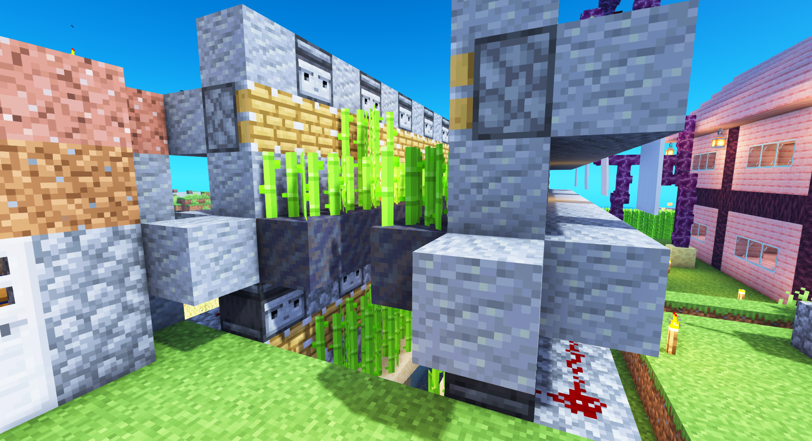5. Creeper Farm
This farm just produce gunpowder, don't underestimate this farm because you all know how much annoying creeper is! so killing them give me and most of us a different revenge vibe. Hope you all can relate. This farm help us to built tnt and rockets.
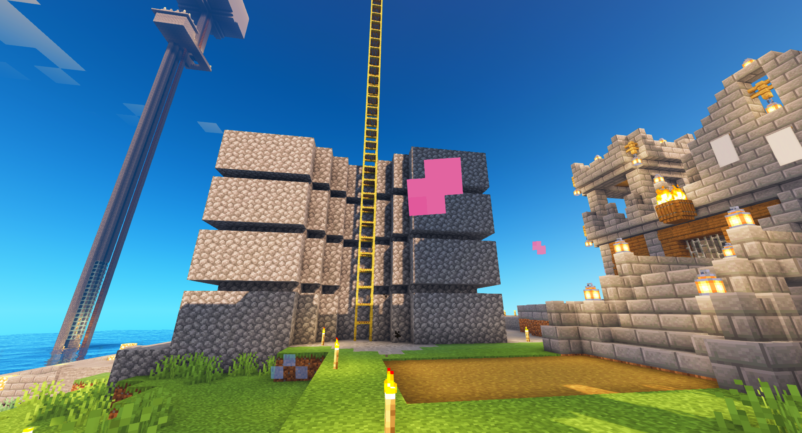6. XP Farm
Well this farm gives XP by killing mobs like Zombie, Creeper, Skelton, Witch, Zombified Villagers also spider but we have made it spider proof so spawn rate doesn't decrease. It give us arrows, bow, armours, rotten flesh, bone, bottle, portions, stick, glowstone dust, gunpowder along with XP. This thing which this mob farm give might look garbage but its useful like, rotten flesh to trade or breed wolfs, bone to make bonemeal and you can use it further.
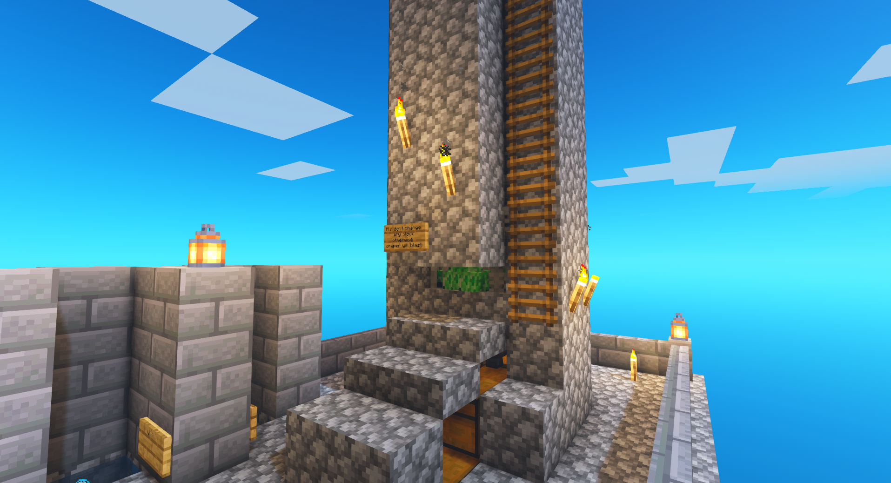7. Trident Farm
Don't just go with the name, it is named as trident that doesn't means u will have unlimited trident, well you can but to use this farm you have to be patience, and if possible use looting sword. Be afk in farm with patience and you will get tridents soon. It also provide rotten flesh, copper, shell, fishing rod.
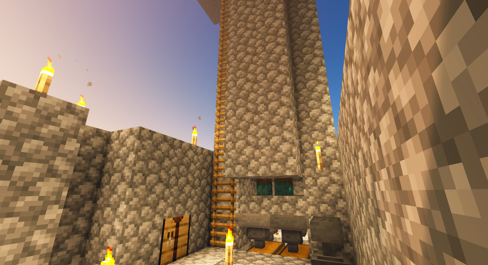8. Bamboo Farm
This farm is mostly used for fuel purpose and making stick to trade with villagers, but with 1.20 latest update we can now make bamboo blocks and planks and raft which is good.
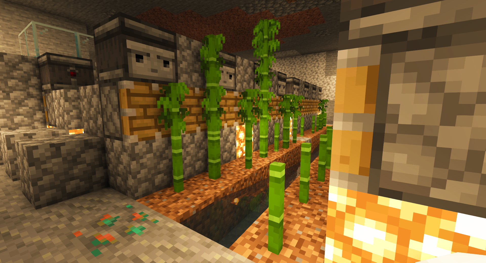9. Slime Farm
If you are master builder like me, then you must know how much slime is needed for build. So here is a simple slime farm, efficient to more than produce enough for our builds.
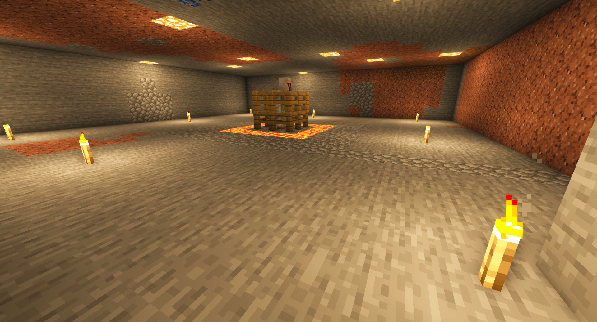10. Cactus Farm
Cactus farm, well we made this farm mainly for green dye to make India Flag, to be honest. But you can use cactus to make a bonemeal. Which can later be used in tree farm.
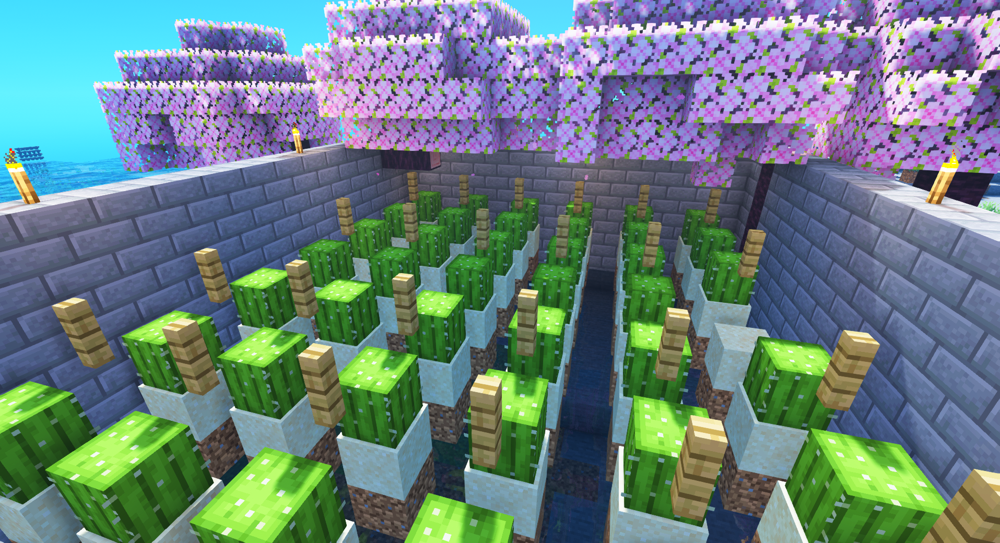11. Honey Farm
Honey farm gives us 2 things, Honey bottle and Honeycomb which can be used to make candle, beehive, honeyblocks.
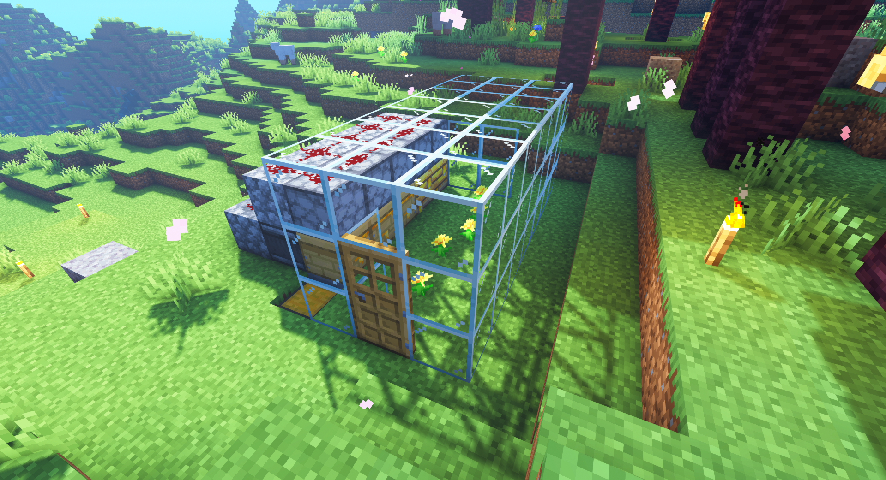12. Dripstone Farm
Dripstone can be used to make infinite lava source. 4 dripstone combine to make a dripstone block and dripstone and dripstone block together used to make dripstone grow bigger and we break them with piston to get dripstone.
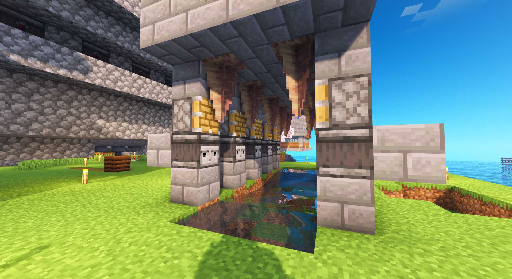13. Pumkin Farm
Pumkin farm gives us pumkin which can further used like making jack lantern, pumkin pie, carved pumkin for making Iron Golems.
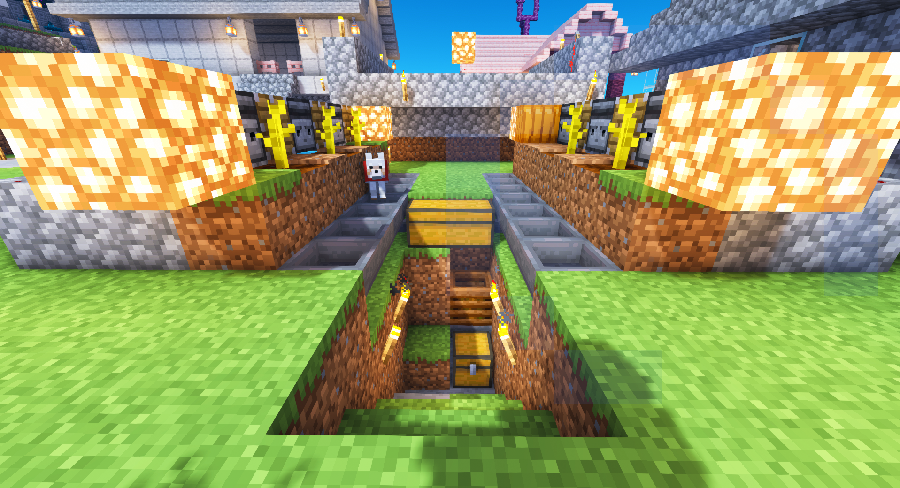14. Wool Farm
Wool is most important for a village and breeding hall, as we need villagers a bed. So we just made a wool factory, well I am saying it factory, because it produce wool on such a big scale. We have all 16 colours of wool, which is available on minecraft. We can also trade wool with villagers.
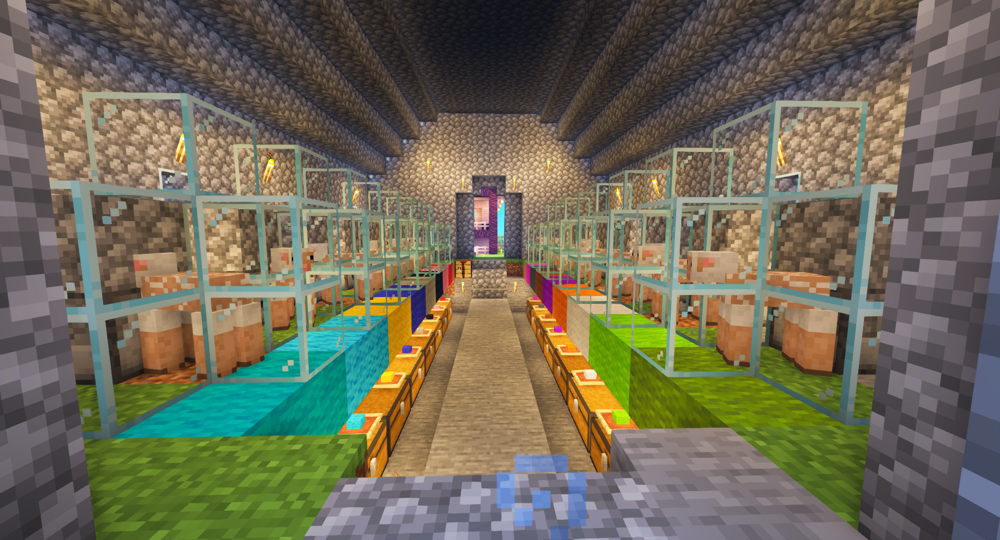15. Kelp Farm
You all can relate that you can cooking something and you ran out of fuel and again going to search for coal, such a hectic work, so we build fuel farm i.e dried kelp farm which can be combined to form a kelp block which is better fuel source than coal.
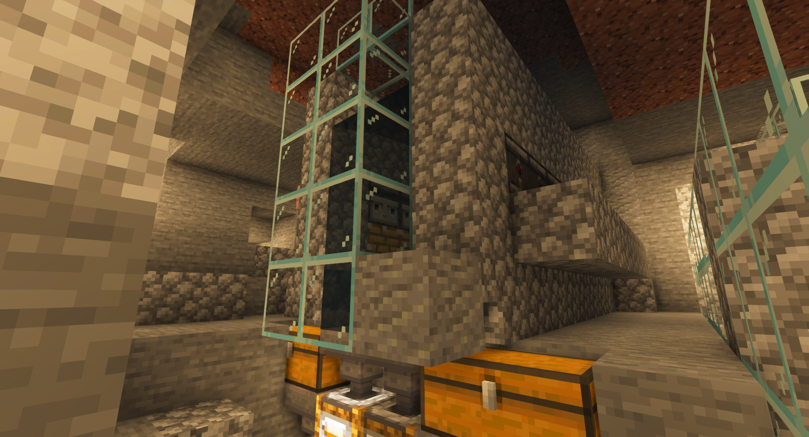16. Bonemeal Farm
We have build a bigger kelp farm and connected it to hopper so it give bonemeal. But we have many different farm to produce bonemeal like from Pumkin Farm, Cactus Farm, Iron Farm, Carrot Farm, Potato Farm, Wheat Farm, Beatroot Farm, and last but not the least XP farm using bone we get from skelton.
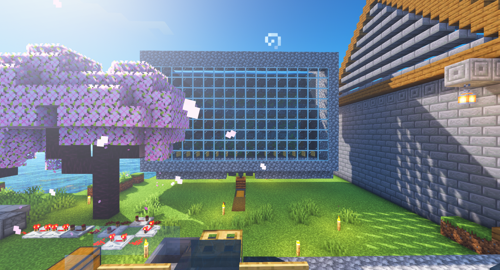17. Fully Automatic Wheat Farm
This farm is fully automatic and here work our farmer villager, a rail with hopper is connected to pick the item which the farmer harvest and rail goes to hopper and we get wheat, seeds in this farm, wheat can be used for breeding cow to get beef and seeds can be used to get bonemeal.
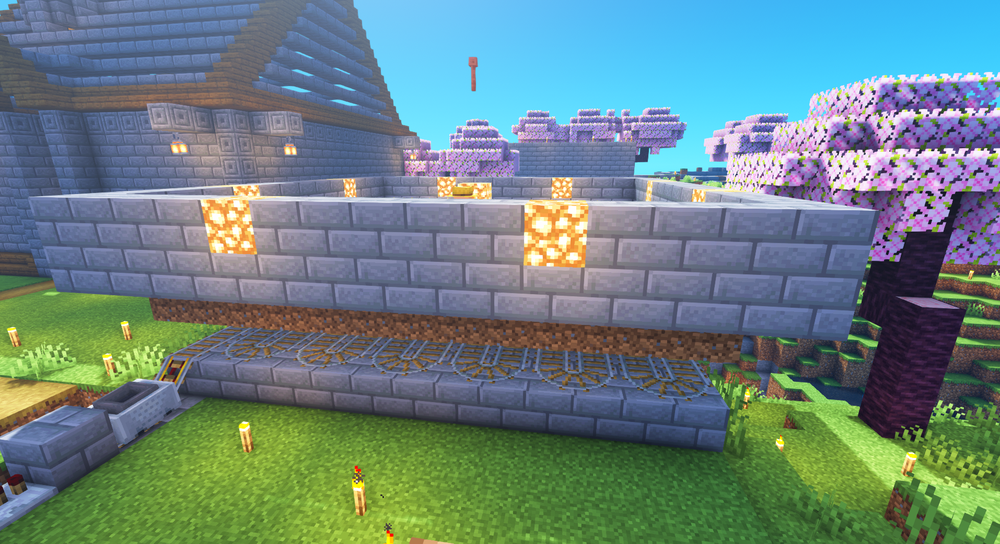18. Semiautomatic Crop Farm
This farm is semi-automatic which means we just have to plant the seeds of whatever crop you need then when its time to harvest just push the lever, crop will be harvested and will move to chest. Actually crop get harvested using water, we press lever and then water flow on crop which harvest them.
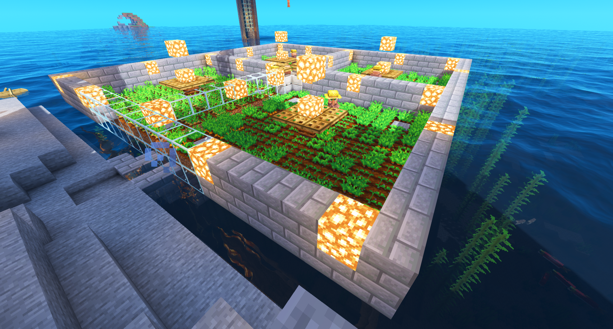19. Light Sensitive Crop Farm
In this farm just plant the crop of whatever plant you need, then just wait the crop to ripe, and when its time to harvest just place the lever which will turn off all the lights in the farmland, and harvest just one crop, only one and then Boom !!!, ever crop will harvest on its own. It's because crop can't be planted under light level, so they just harvest on their own once we harvest one of them.
20. Default Crop Farmland
Well its just a normal farmland, but here comes the twist plant the crop of whatever crop you need then when its time to harvest just use a bucket of water to harvest them. So it make us easier to harvest the crop.
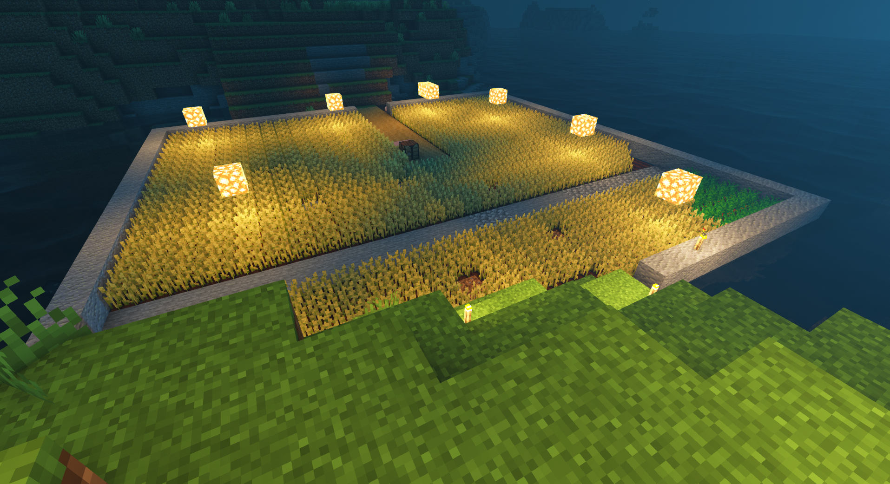21. Lava Farm
With the use of dripstone we get from dripstone farm we can make this farm. Build is simple just dripstone and lava on top and couldron below the dripstone. We have 2 lava farm. We can use this as simple aternative of fuel but it only work in furnace, not in blast furnace and smoker. With these we can easily turn cobblestone into stone and further stone into smooth stone. And we can also cook our foods and preety much anything which is burned in furnace.
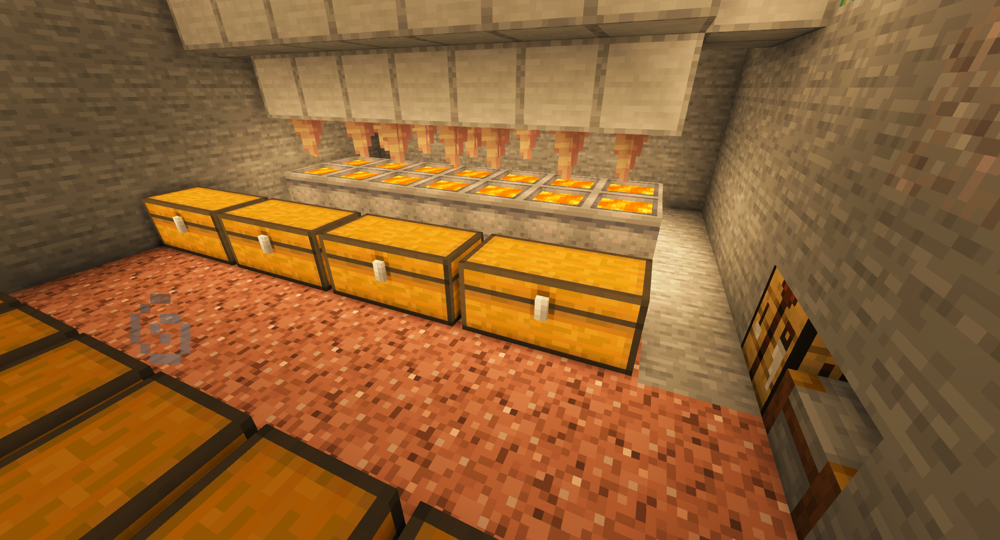22. Gold Farm
Well, this isn't a super efficient farm. Ya but if you really need some gold, we have another gold farm go and check that out. This is just a simple trap to trap zombified piglins and kill them which drops gold nuggets, golden sword, rotten flesh.
23. Automatic Carrot Farm
This is automatic carrot farm handeled by farmer villagers, this farms is too powered in long run, as it make huge amounts of crops by the end of the day. We can use this crop itself to trade with those farmer villagers to get easy emerald.
24. Automatic Potato Farm
This automatic potato farm has same like automatic carrot farm but this make potatoes instead of carrots.
25. Automatic Beetroot Farm
This automatic beetroot farm has same like automatic carrot farm and automatic potato farm but this make beetroot instead of carrots and potatoes.
26. Rail Farm
This farm produce insane amount of rails. This is actually a glitch of minecraft which is really useful. We can duplicate all type of rails i.e rails, activator rails, detector rails, powered rails.This farm make us easy to connect our places with rails.
27. String Farm
This string farm duplicate the string. This is also a duplication glitch of minecraft.
28. Wood Farm
Wood is the most fundamental thing in minecraft. So here is the wood farm. We just need sapling and bonemeal and be ready to get a stacks and stacks of woods. It also give stick, apple if using oak sapling and saplings of tree along with woods.
29. Automatic Cobblestone Farm
For making any build ofcourse we need any builing block, so here come cobblestone farm. It is fully automatic. You can smelt it using super smeltor build in storage system of this farm to get stone and further smelt to get smooth stone.
30. Raid Farm
Raid farm is most overpowered farm as it give us totem, well its not a hardcore world but still totem is totem, so better we should respect it. This farm gives us Emerald, Stick, Gun powder, Glowstone dust, Glass bottle, Portions, Redstone, Crossbows, Omnious Banner along with Totem of undying.
Most important we don't need to go to pillager outpost to activate this farm.
31. Flower Farm
This farm produce different kinds of flower, with which we can make different types of dye by combining them. Along with flowers it also provide some wheat which you can put in composter to make bonemeal of that.
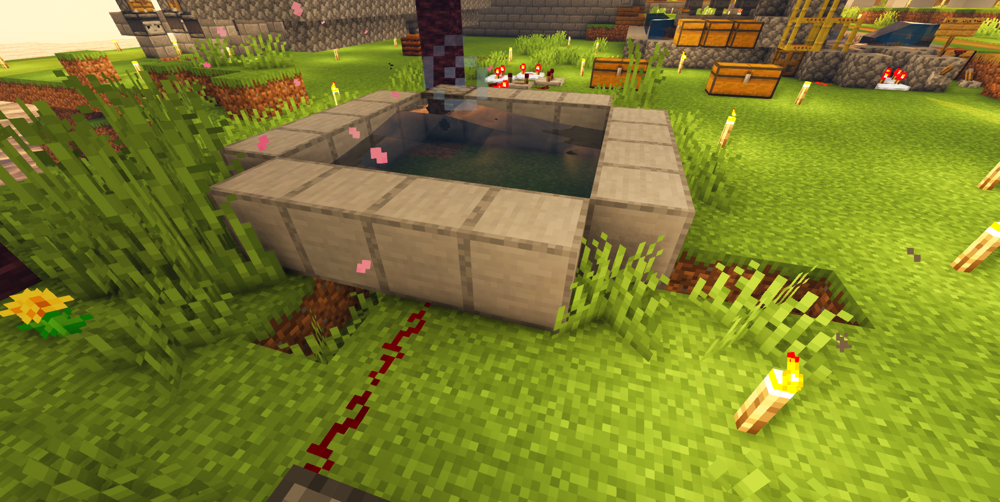32. Gold Farm
This is a super powerful gold farm. Build using Nether Portal Link mechanism. Easy to build yet super powerful. We just need to kill them in killing chamber which drops gold nuggets, golden sword, rotten flesh. And this all item get separated in all respective chest using item sorter.